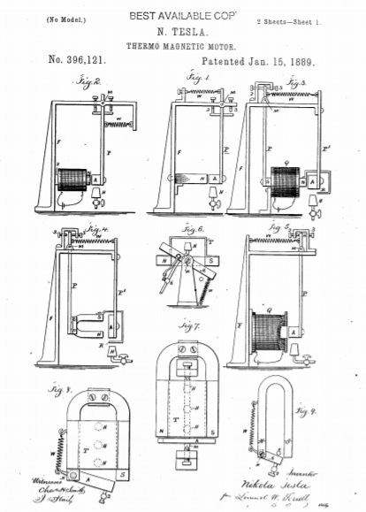
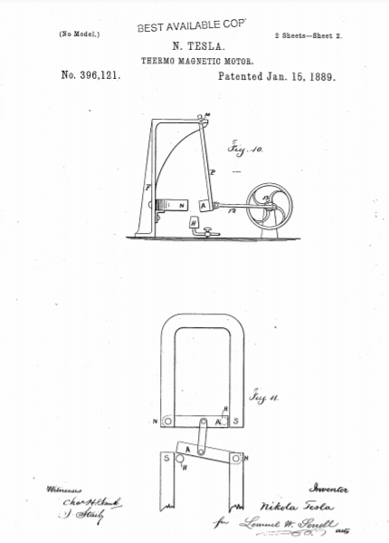

Descarga la patente original en esté enlace



Se sabe que yo, NIKOLA TESLA , de Smiljan, Lika, país fronterizo de Austria-Hungría, he inventado una mejora en los motores termo-magnéticos, de los cuales la siguiente es una especificación.
Es bien sabido que el calor aplicado a un cuerpo magnetizado disminuirá el magnetismo, y si la temperatura se eleva lo suficiente, el magnetismo se neutralizará o destruirá.
En mi presente invención, obtengo energía mecánica mediante una acción recíproca resultante de las operaciones conjuntas de calor, magnetismo y un resorte o peso u otra fuerza, es decir, someto un cuerpo magnetizado por inducción o de otro modo a la acción del calor. hasta que el magnetismo esté lo suficientemente neutralizado para permitir que un peso o resorte dé movimiento al cuerpo y disminuya la acción del calor, de modo que el magnetismo pueda ser lo suficientemente restaurado para mover el cuerpo en la dirección opuesta, y nuevamente someterlo a la desmagnetización del calor.
Al llevar a cabo mi invención, puedo hacer uso de un electroimán o un imán permanente, y preferiblemente dirijo el calor contra un cuerpo que está magnetizado por inducción, en lugar de directamente contra un imán permanente, evitando así la pérdida de magnetismo que puede resultar en el imán permanente por la acción del calor. También preveo la disminución del volumen de calor o la interceptación del mismo durante la parte del movimiento alternativo en el que tiene lugar la acción de enfriamiento.
En los dibujos he representado mediante diagramas algunos de los numerosos arreglos que pueden utilizarse para llevar a cabo mi invención. En todas estas figuras, los polos magnéticos están marcados con NS, la armadura A, el mechero Bunsen u otra fuente de calor H, el eje de movimiento M, y el resorte o su equivalente, es decir, un peso, está marcado W.
En la Figura 1, el imán permanente N está conectado con un marco, F, que soporta el eje M, del cual cuelga el brazo P, y en el extremo inferior del cual se apoya la armadura A. Los topes 2 y 3 limitan la extensión del movimiento, y el resorte W tiende a alejar la armadura A del imán N. Ahora debe entenderse que el magnetismo de N es suficiente para superar el resorte W y atraer la armadura A hacia el imán N. El calor que actúa sobre el inducido A neutraliza su magnetismo inducido lo suficiente como para que el resorte W aleje el inducido A del imán N y también del calor en H. El inducido ahora se enfría y la atracción del imán N vence el resorte W y lleva de nuevo el inducido A por encima del quemador H, de modo que éste se vuelve a calentar y se repiten las operaciones. Los movimientos alternativos así obtenidos se emplean como fuente de energía mecánica de cualquier manera deseada. Normalmente, se utilizará una biela a una manivela sobre un eje de volante, como se indica en la figura 10; pero no me limito a este respecto.
La figura 2 representa las mismas partes que se describieron anteriormente; pero se ilustra un electroimán en lugar de un imán permanente. Las operaciones, sin embargo, son las mismas.
En la Fig. 3 he mostrado las mismas partes que en las Figs. 1 y 2, solo que están dispuestos de manera diferente. La armadura A, en lugar de oscilar, está estacionaria y sujeta por un brazo, P ', y el núcleo NS del electroimán se hace oscilar dentro de la hélice Q, dicho núcleo está suspendido por el brazo P del pivote M. Un escudo, R, está conectado con el núcleo magnético y se balancea con él, por lo que que después de que el calor ha desmagnetizado la armadura A hasta tal punto que el resorte W aleja el núcleo NS de la armadura A, el escudo R se interpone entre la llama H y la armadura A, interceptando así la acción del calor y permitiendo que la armadura se enfriar, de modo que el magnetismo, de nuevo preponderante, provoca el movimiento del núcleo NS hacia el inducido A y la retirada del blindaje R por encima de la llama, de modo que el calor actúa nuevamente para disminuir o neutralizar el magnetismo. Puede obtenerse un movimiento giratorio o de otro tipo a partir de este movimiento alternativo.
La figura 4 corresponde en todos los aspectos a la figura 3, excepto que un imán de herradura permanente, NS, está representado en lugar del electroimán en dicha figura 3.
En la Fig. 5 he mostrado una hélice, Q, con una armadura adaptada para oscilar hacia o desde la hélice. En este caso, puede haber un núcleo de hierro dulce en la hélice, o la armadura puede asumir la forma de un núcleo de solenoide, no habiendo un núcleo permanente dentro de la hélice.
La figura 6 es una vista desde un extremo y la figura 7 una vista en planta, que ilustra mi mejora aplicada a un inducido oscilante, A, y un imán permanente estacionario, N S. En este caso, aplico el calor a un inducido o retenedor auxiliar. , T, que está adyacente y preferiblemente en contacto directo con el imán. Esta armadura T, en forma de placa de chapa de hierro, se extiende a través de un polo al otro y es de sección suficiente para formar prácticamente un guardián para el imán, de modo que cuando esta armadura T se enfría casi todas las líneas de la fuerza pasa sobre el mismo y se exhibe muy poco magnetismo libre. Entonces, el inducido A, que se balancea libremente sobre los pivotes M delante de los polos NS, es muy poco atraído y el resorte stira del mismo lejos de los postes en la posición indicada en los dibujos. El calor se dirige sobre la placa de hierro T a cierta distancia del imán, para permitir que el imán se mantenga relativamente frío. Este calor se aplica por debajo de la placa por medio de los quemadores H, y hay una conexión desde el inducido A o su pivote al grifo de gas 6 u otro dispositivo para regular el calor. El calor que actúa sobre la parte media de la placa T, la conductividad magnética de la parte calentada disminuye o se destruye, y un gran número de líneas de fuerza se desvían sobre la armadura A, que ahora es poderosamente atraída y alineada. o casi así, con los polos N S. Al hacerlo, el grifo 6 está casi cerrado y la placa T se enfría, las líneas de fuerza se desvían nuevamente sobre el mismo, la atracción ejercida sobre el inducido A disminuye, y el resorte W tira del mismo alejándolo del imán a la posición mostrada por líneas completas, y las operaciones se repiten. La disposición que se muestra en la Fig. 6 tiene la ventaja de que el imán y la armadura se mantienen fríos y la fuerza del imán permanente se conserva mejor, ya que el circuito magnético está constantemente cerrado.
En la vista en planta, Fig. 8, he mostrado un imán permanente y una placa de retención, T, similares a los de las Figs. 6 y 7, con los quemadores H para el gas debajo de los mismos; pero la armadura gira en un extremo hacia un polo del imán y el otro extremo gira hacia y desde el otro polo del imán. El resorte W actúa contra un brazo de palanca que se proyecta desde el inducido, y el suministro de calor tiene que ser cortado parcialmente por una conexión al inducido oscilante, a fin de disminuir el calor que actúa sobre la placa de retención cuando el inducido A ha sido atraído.
La figura 9 es similar a la figura 8, excepto que no se hace uso del protector T y el propio inducido entra y sale del rango de la intensa acción del calor del quemador H.
En la figura 11, las dos armaduras AA están conectadas por un enlace, de modo que una se calentará mientras que la otra se enfría, y la atracción ejercida para mover la armadura enfriada se aprovecha para extraer la armadura calentada en lugar de usar un resorte.
He mostrado en los dibujos varias formas de realizar mi invento; pero dicha invención no está limitada por ninguna forma, disposición o construcción particular de dispositivos.
Reclamo como mi invención:
Firmado por mí el día 29 de marzo de 1886.
Nikola Tesla.